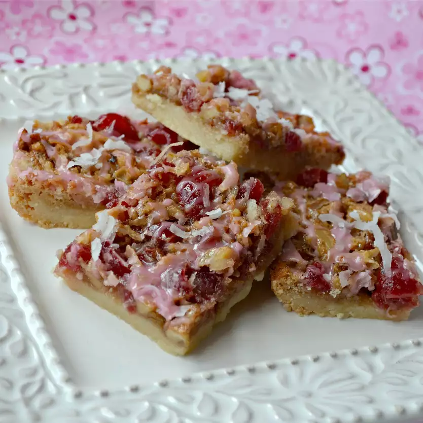

Cherry Walnut Bars

Bars with a shortbread-like base and topped with frosting and coconut. - Anonymous User
Ingredients
- 2 1/4 cups all-purpose flour
- 1/2 cup white sugar
- 1 cup softened butter
- 2 eggs
- 1 cup packed brown sugar
- 1/2 teaspoon salt
- 1/2 teaspoon baking powder
- 1 teaspoon vanilla extract
- 1/2 cup chopped walnuts
- 1/2 cup flaked coconut
- 4 ounces maraschino cherries
- 2 tablespoons butter
- 1 1/2 cup confectioner's sugar
Directions
- Preheat oven to 350 degrees F (180 degrees C).
- Mix together flour, white sugar and butter or margarine. Mix until crumbly. Press into
a 9 x 13 inch pan. Bake for 20 minutes or until lightly browned.
- Beat eggs, sugar, salt, baking powder, and vanilla. Drain and chop cherries, reserving
liquid. Stir chopped cherries, nuts, and coconut into egg mixture. Pour on top of crust.
- Bake 25 min. Cool.
- Combine 2 tablespoons butter and 1 1/2 cup confectioner's sugar with enough liquid from cherries until spreadable. Frost bars. Sprinkle with coconut when icing is set.
Return to Homepage